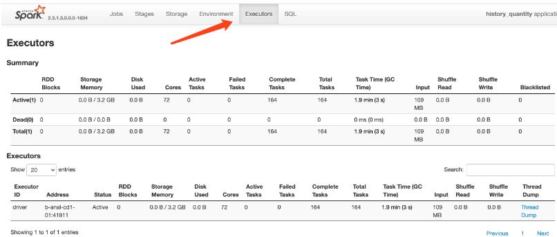
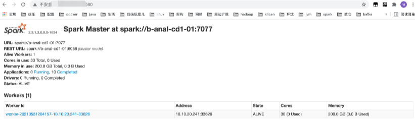
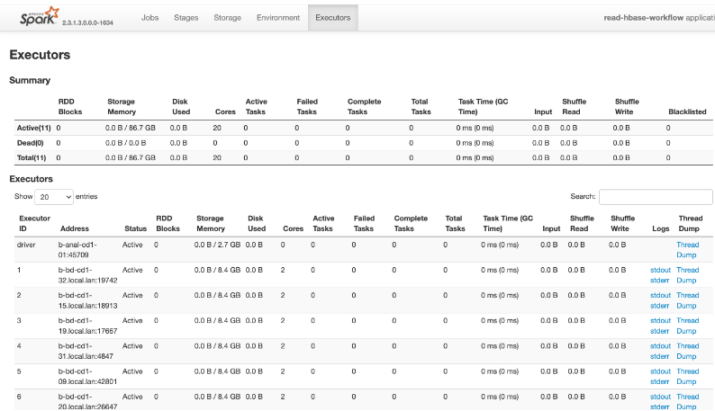
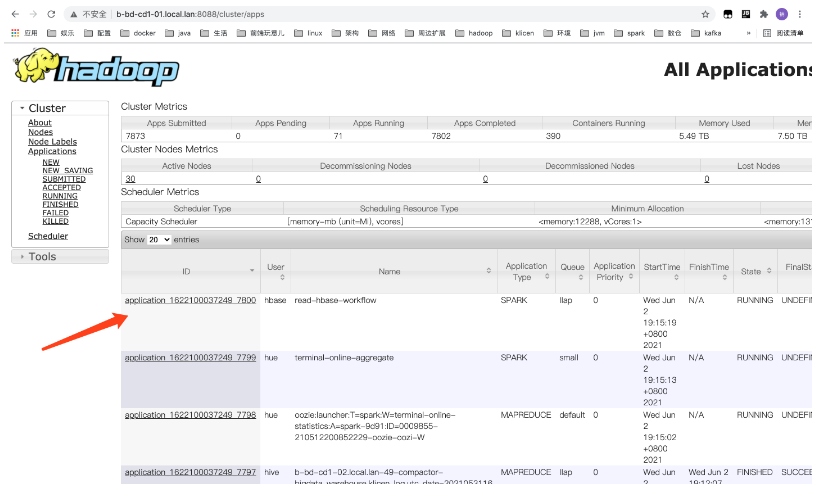
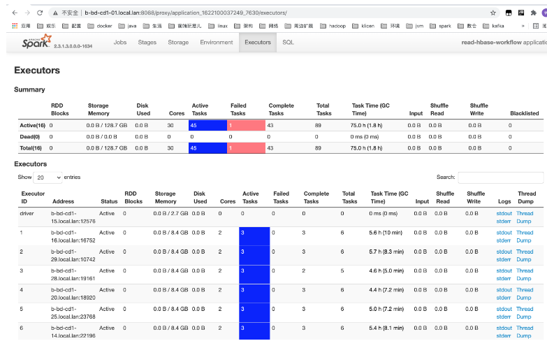

服务器提交运行任务
目前我们提交并运行pyspark的模式目前有5种，下面我们依次说明每一种模式.
local模式
spark-submit --master local[*] --num-executors 20 --executor-cores 2 --executor-memory 10g --driver-memory 6g --conf "spark.pyspark.python=/usr/bin/python3.5" --archives /usr/local/lib/python3.5/pyspark_venv.tar.gz#environment /data/read_hbase.py提交命令中使用的–master local[n]或者是–master local[*]，该种模式提交的spark任务只会在当前机器上运行，这种模式运行spark任务，你在机器上看到只有一个进程，日志打出：
21/08/01 08:28:15 WARN Utils: Service ‘SparkUI’ could not bind on port 4040. Attempting port 4041.
说明该任务的ui界面默认是4040端口展示，但是4040端口被占用了，所以用了4041端口来启动ui界面，用当前机器ip加端口就能看到该任务的ui图。就我们的机器而言就是ip:4041。进入ui界面，可以看到自己的spark任务的dag图，验证前面所说的只有一个进程，点击executors，就可以看到一共启动了多少个进程去运行该任务：
可以看到只有一个driver进程，就在b-anal-cd1-01也就是241上启动的，分配了72个cores，计算出来的storge momory是3.2g。看到这个ui，你可能就用疑问了，为什么是72cores，storge momory为什么是3.2g?
原因是由于我们用的是–master local[*]（local模式启动）其中*代表当前机器有多少core就会启动多少个线程，local[n]表示启动n个，至于storge momory其实是根据spark的内存模型算出来的。local模式下spark-submit进程既当爹又当妈，既是提交任务的client进程，又是driver进程，还是task的executor（spark中driver是用于管理executor，将任务分发给executor执行，executor执行完后通知driver）。所以提交参数中–num-executors 20 –executor-cores 2 –executor-memory 10g这个几个参数是无效的，也是不需要的。–driver-memory 6g设置了driver的总内存6g，算下来storge momory是3.2g。
该种模式下玩的是单进程，启动多线程的方式来模拟了spark启动多个executor去执行spark的子任务，所以我们需要把driver的内存配大到yarn cluster模式下多个executor内存和的大小。
spark-submit --master local[*] --driver-memory 100g --conf "spark.pyspark.python=/usr/bin/python3.5" --archives /usr/local/lib/python3.5/pyspark_venv.tar.gz#environmen /data/read_hbase.py
该模式属于当前机器本地运行spark任务，仅限于数据比较少，几十个g或者是测试的情况下
standalone模式
spark-submit --master --num-executors 15 --total-executor-cores=40 --executor-cores 2 --executor-spark://b-anal-cd1-01:7077memory 15 --driver-memory 5g --conf "spark.pyspark.python=/usr/bin/python3.5"--archives --py-files /data/*.py /data/read_hbase.pyspark的集群模式，什么意思啦？也就是说spark这个组件可以维护一个集群，通过spark-submit可以将任务提交到集群中去运行。该集群由一个master和多个worker组成，submit提交任务给master后，master会根据参数在自己管理的所有worker节点上启动30个executor和一个driver，同时worker会给每一个启动的executor分配15g的内存。
目前只有一台服务器 A，在上面启动了master和worker，那么就维护了一个只有一台机器的spark集群，master和worker1都是当前机器，worker1就会启动30个executor和一个driver，同时worker会给每一个启动的executor分配15g的内存
如果再分配一台服务器B，我在上面只需启动worker就可以，那么就维护了一个两台机器的spark集群，master和worker1在A机器上worker2在B机器上，你提交任务过来的时候，worker1和worker2就会一起去完成启动30个executor和一个driver，同时worker会给每一个启动的executor分配15g的内存。可能就是worker1启动一个driver和10个executor，worker2启动剩余的20个executor。
使用该种模式，首先需要去创建一个spark集群, 然后在/usr/hdp/3.0.0.0-1634/spark2目录下，
执行./sbin/start-master.sh启动master，可以在默认端口ip:8080的master的ui界面看到集群状况
执行./sbin/start-slave.sh -c 30 -m 200G 启动worker，可以使用机器的30个core和200个g的内存用来分配给spark://ip:7077executor或driver执行任务。执行后在master的ui上可以看到一个worker加入了集群：

如果还有别的机器，在那台机器上也执行一下：./sbin/start-slave.sh-c 30 -m 200G，ui上又一个worker也加入了spark://ip:7077进来。从例子看，目前这个集群最多只有200个g的内存和30个core提供任务计算，如果都用完，任务将提交不了。
该模式下用到了–total-executor-cores=40和–executor-cores 2来控制executor的数量，参数表示总共用40个cores，每个executor用2个cores，所以会启动20个executor。而–num-executors参数也就没有效果了
spark-submit --master--total-executor-cores=40 --executor-cores 2 --executor-memory 15g --driver-spark://b-anal-cd1-01:7077memory 5g --conf "spark.pyspark.python=/usr/bin/python3.5"--archives /home/test_pyspark_venv.tar.gz#environment --py-files /data/protobuf_to_dict.py /data/read_hbase.py
yarn client模式
spark-submit --master yarn --queue llap --name read-hbase-workflow --num-executors 15 --executor-cores 2 --executor-memory 15g --driver-memory 5g --conf "spark.pyspark.python=/usr/bin/python3.5" --conf spark.driver.extraClassPath=/usr/hdp/current/phoenix-client/phoenix-client.jar:/usr/hdp/current/spark2-client/jars/spark-hive_2.11-2.3.1.3.0.0.0-1634.jar:/usr/hdp/current/spark2- --conf spark.executor.extraClassPath=/usr/hdp/current/phoenix-clientclient/jars/spark-examples_2.11-1.6.0-typesafe-001.jar/phoenix-client.jar:/usr/hdp/current/spark2-client/jars/spark-hive_2.11-2.3.1.3.0.0.0-1634.jar:/usr/hdp/current/spark2-client --archives /home/klicenbd/jiaoruiqiang/test_pyspark_venv.tar.gz#environment --/jars/spark-examples_2.11-1.6.0-typesafe-001.jarpy-files /data/protobuf_to_dict.py /data/read_hbase.py这种区别于spark集群模式，首先是–master yarn参数改变，设置了–queue llap参数表示该任务提交到yarn后用llap对列的资源，也可以写成offline，具体有没有资源要看一下yarn的资源状况
http://b-bd-cd1-01.local.lan:8088/ui2/index.html#/yarn-queues/root 还对spark.driver.extraClassPath和spark.executor.extraClassPath做了设置,表示driver和executor启动的时候需要把这些jar包拷到自己的容器里面去用
yarn和spark集群模式的区别是，yarn是一个对机器资源的管理者，当提交参数是–master yarn时，–deploy-mode参数没写默认时client，表示用yarn client模式启动任务。此时提交的任务就会向yarn的一个做资源管理的组件resource manager申请你提交参数中的资源，比如我们的命令就是：我需要启动15个executor，每个executor需要分15g的内存，driver分5g的内存。resource manager就会给yarn的另一个管理集群机器的组件node manager发送指令，选择一个在当前node manager机器上启动application master，再向node managerresource manager注册。接着applicati再去resource manager申请executor的资源，申请到后与对应机器的node manager联系，启动executor，启动好后driver分发任务给on masterexecutor执行。区别于spark集群模式，向自己集群中的master提交并申请资源，同时worker节点去启动executor。
client模式的默认端口也是4040，打开后就可以看到当前任务的ui界面了，我们还是来看executors界面：
yarn和spark集群模式的区别是，yarn是一个对机器资源的管理者，当提交参数是–master yarn时，–deploy-mode参数没写默认时client，表示用yarn client模式启动任务。此时提交的任务就会向yarn的一个做资源管理的组件resource manager申请你提交参数中的资源，比如我们的命令就是：我需要启动15个executor，每个executor需要分15g的内存，driver分5g的内存。resource manager就会给yarn的另一个管理集群机器的组件node manager发送指令，选择一个在当前node manager机器上启动application master，再向node managerresource manager注册。接着applicati再去resource manager申请executor的资源，申请到后与对应机器的node manager联系，启动executor，启动好后driver分发任务给on masterexecutor执行。区别于spark集群模式，向自己集群中的master提交并申请资源，同时worker节点去启动executor。
client模式的默认端口也是4040，打开后就可以看到当前任务的ui界面了，我们还是来看executors界面
可以和上面的spark集群模式的yarn做对比：–num-executors 15 –executor-cores 2 –executor-memory 15g –driver-memory 5g这几个参数一样申请到的资源也是一样的。区别在于yarn client模式下，只有driver容器（进程）启动在当前机器上，其余的executor已经在大数据的其他机器上了。这样读取数据的速度相对更快，因为要读取的数据很可能和executor在一台机器上，所以更快。
同时提交的任务已经可以在yarn的管理任务列表中看到了，：–name read-hbase-workflow名字和这个参数设置的一样，也可以从yarn界面点进去了yarn的任务管理界面：或http://b-bd-cd1-01.local.lan:8088/clusterhttp://b-bd-cd1-01.local.lan:8088/ui2/index.html#/yarn-apps/apps

该模式属于yarn client模式，只有driver运行在任务提交的机器上，executor都在大数据的正式机器上运行，所以提交需谨慎些，最好由大数据开发检查后提交。
yarn cluster模式
spark-submit --master yarn --deploy-mode cluster --queue llap --name read-hbase-workflow --num-executors 15 --executor-cores 2 --executor-memory 15g --driver-memory 5g --driver-cores 2 --conf "spark.pyspark.python=/usr/bin/python3.5" --conf spark.driver.extraClassPath=/usr/hdp/current/phoenix-client/phoenix-client.jar:/usr/hdp/current/spark2-client/jars/spark-hive_2.11- --conf spark.executor.2.3.1.3.0.0.0-1634.jar:/usr/hdp/current/spark2-client/jars/spark-examples_2.11-1.6.0-typesafe-001.jarextraClassPath=/usr/hdp/current/phoenix-client/phoenix-client.jar:/usr/hdp/current/spark2-client/jars/spark-hive_2.11- --archives /home/klicenbd2.3.1.3.0.0.0-1634.jar:/usr/hdp/current/spark2-client/jars/spark-examples_2.11-1.6.0-typesafe-001.jar test_pyspark_venv.tar.gz#environment --py-files /data/protobuf_to_dict.py /data/read_hbase.py该模式和yarn client的提交模式在命令上唯一的区别是多了个参数–deploy-mode cluster。界面只有从yarn的任务管理界面找到你自己提交的任务进入了：
yarn的任务管理界面： http://b-bd-cd1-01.local.lan:8088/clusterhttp://b-bd-cd1-01.local.lan:8088/ui2/index.html#/yarn-apps/apps

从ui上你会发现driver已经不在你提交任务的机器上了，和executor一样，都在大数据的正式集群机器上。其余区别：driver运行在application master中，负责申请资源和监控executor的任务执行状况，你可以离开提交任务的界面，不会中断任务的执行。–archives /home/klicenbd/jiaoruiqiang/test_pyspark_venv.tar.gz#environment对于之前准备的python运行环境在这里将不适用，因为driver运行在了大数据随机的一台机器上，而不再是你提交任务的机器，所以它会找不到该压缩包，两种办法，要么将虚拟环境压缩包在每台机器都放一个，要么在大数据机器上用
pip3 install packages程序所需要的python包。我采用的后者，相对要方便一点。
用图展示如下（左边yarn cluster，右边yarn client）
该模式属于yarn cluster模式，driver和executor都在大数据的正式机器上运行，所以提交需谨慎些，最好由大数据开发检查后提交。
mesos模式
该模式是spark官方推荐的运行模式。但目前公司未使用，mosos也是一个集群资源管理器，mesos提供粗粒度和细粒度的资源管理模式，但是目前由于细粒度的管理模式相对繁琐，已弃用，保留的粗粒度管理模式和yarn的资源管理很类似，公司选择了yarn来管理，所以这里我们就不细说了，可以自行去查资料了解。
目前从上面4种运行模式来看，pyspark的运行速度都赶不上spark，因为涉及python进程和jvm进程数据交互，所以建议从pyspark熟悉后采用spark来执行，因为api几乎都是一样的。
Spark提交任务参数说明
–class 入口类名，对于Java和Scala程序来说是包含main()的类的名字，python程序则无须指定该选项
–master 集群master的地址
local ：以本地单线程运行Spark
local[N] ：以本地多个线程运行Spark
local[*] ：以本地模式运行Spark，线程数等于机器的内核数
spark://host:port ：连接指定的Standalone集群运行spark
yarn-client ：以client模式连接到YARN集群，集群位置将通过HADOOP_CONF_DIR环境变量获得
yarn-cluster ：以cluster模式连接到YARN集群，集群位置将通过HADOOP_CONF_DIR环境变量获得
mesos://host:port ： 连接指定的Standalone集群运行spark
–deploy-mode 程序部署模式
将driver部署到worker节点(cluster模式)或者作为外部客户端部署到本地(client模式)，默认情况下是client模式
client：执行Spark-submit命令的机器上启动Drive程序
cluster：会在其中一台工作节点上运行drive程序
–jars 第三方发布的Jar包，多个jar包需要用英文的逗号隔开
–num-executors：executor进程数
–executor-cores：
executor进程分配到的核数,单个executor能并发执行task数
–executor-memory：executor进程分配到的内存大小，根据job需求以及并发数设置
–py-files：用于上传.py,.zip和.egg的文件
–driver-memory：指定drive进程进行分配内存大小
–conf spark.storage.memoryFraction：设置内存用来作为cache的比例(=0.1)
–conf spark.hadoop.fs.hdfs.impl.disable.cache：禁止使用内存cache(=true)
–conf spark.default.parallelism: 控制Spark中的分布式shuffle过程默认使用的task数量，默认Others: total number of cores on all executor nodes or 2, whichever is larger，每一个CPU核(core)分配2-3个任务(=400)
–conf spark.yarn.executor.memoryOverhead: JVM进程中除Java堆以外占用的空间大小，包括方法区(永久代)、Java虚拟机栈、本地方法栈、JVM进程本身所用的内存、直接内存(Direct Memory)等(=5000)
–conf spark.kryoserializer.buffer: 在每一个work的每一个core上都有一个初始化的buffer, 这些buffer的最大的可达到conf spark.kryoserializer.buffer.max参数设置的参数
–conf spark.kryoserializer.buffer.max 用来设置对象序列化占用空间大小(=2000m)
–conf spark.driver.maxResultSize:表所有分区的序列化运行总的内存限制 ,控制worker送回driver的数据大小，一旦操过该限制，driver会终止执行(=10g)